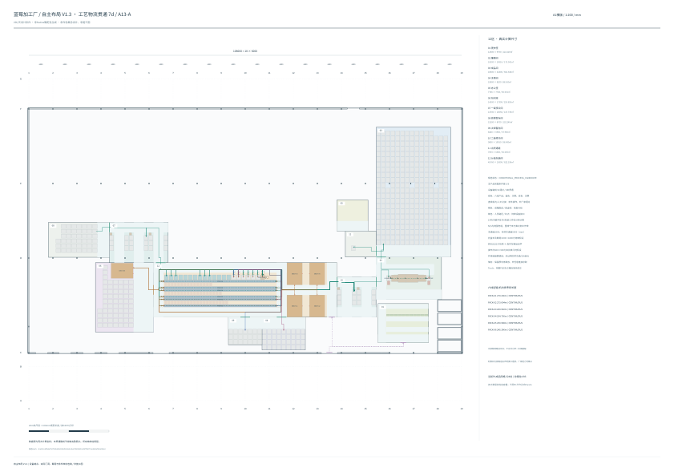

从当前项目输入、真实建筑结构和P1重新计算。原7天容量与全量功能保留，8天采用364个成品网格位。 每套候选均重新验证六条主产品链、三条辅助支线、57项交接、11条非货车Access和16项室内/仓储接口。 未通过的空间与设备尝试保留在各工况搜索记录中。
条件性概念设计；机内与人工交接仍需工程输入。几何验证不等于设备批准、同时交通、Truck或完整P2D通过。

A1横版、1:200，按100%打印。原建筑1～19轴、108000mm；室内柱保留并分别避让设备与通道。 不同存储天数属于不同P1，不能跨工况冒充正式Pareto。潜在中心线交会仍需生产调度。